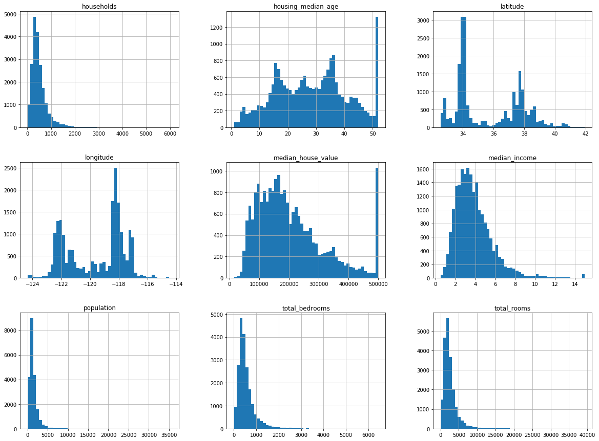
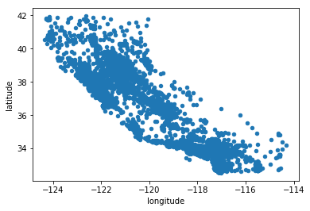
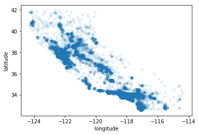
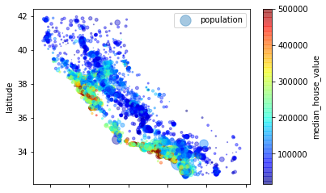
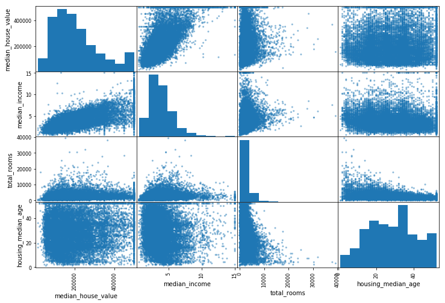
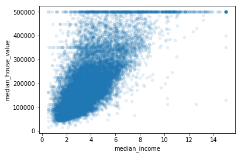

fetch the data:
1 | import os |
load data using Pandas:
1 | import pandas as pd |
1 | housing = load_housing_data() |
| longitude | latitude | housing_median_age | total_rooms | total_bedrooms | population | households | median_income | median_house_value | ocean_proximity | |
|---|---|---|---|---|---|---|---|---|---|---|
| 0 | -122.23 | 37.88 | 41.0 | 880.0 | 129.0 | 322.0 | 126.0 | 8.3252 | 452600.0 | NEAR BAY |
| 1 | -122.22 | 37.86 | 21.0 | 7099.0 | 1106.0 | 2401.0 | 1138.0 | 8.3014 | 358500.0 | NEAR BAY |
| 2 | -122.24 | 37.85 | 52.0 | 1467.0 | 190.0 | 496.0 | 177.0 | 7.2574 | 352100.0 | NEAR BAY |
| 3 | -122.25 | 37.85 | 52.0 | 1274.0 | 235.0 | 558.0 | 219.0 | 5.6431 | 341300.0 | NEAR BAY |
| 4 | -122.25 | 37.85 | 52.0 | 1627.0 | 280.0 | 565.0 | 259.0 | 3.8462 | 342200.0 | NEAR BAY |
The info() method is useful to get a quick description of the data, in particular the total number of rows, and each attribute’s type and number of non-null values
1 | housing.info() |
<class 'pandas.core.frame.DataFrame'>
RangeIndex: 20640 entries, 0 to 20639
Data columns (total 10 columns):
longitude 20640 non-null float64
latitude 20640 non-null float64
housing_median_age 20640 non-null float64
total_rooms 20640 non-null float64
total_bedrooms 20433 non-null float64
population 20640 non-null float64
households 20640 non-null float64
median_income 20640 non-null float64
median_house_value 20640 non-null float64
ocean_proximity 20640 non-null object
dtypes: float64(9), object(1)
memory usage: 1.6+ MB
1 | housing["ocean_proximity"].value_counts() |
<1H OCEAN 9136
INLAND 6551
NEAR OCEAN 2658
NEAR BAY 2290
ISLAND 5
Name: ocean_proximity, dtype: int64
The describe() method shows a summary of the numerical attributes
1 | housing.describe() |
| longitude | latitude | housing_median_age | total_rooms | total_bedrooms | population | households | median_income | median_house_value | |
|---|---|---|---|---|---|---|---|---|---|
| count | 20640.000000 | 20640.000000 | 20640.000000 | 20640.000000 | 20433.000000 | 20640.000000 | 20640.000000 | 20640.000000 | 20640.000000 |
| mean | -119.569704 | 35.631861 | 28.639486 | 2635.763081 | 537.870553 | 1425.476744 | 499.539680 | 3.870671 | 206855.816909 |
| std | 2.003532 | 2.135952 | 12.585558 | 2181.615252 | 421.385070 | 1132.462122 | 382.329753 | 1.899822 | 115395.615874 |
| min | -124.350000 | 32.540000 | 1.000000 | 2.000000 | 1.000000 | 3.000000 | 1.000000 | 0.499900 | 14999.000000 |
| 25% | -121.800000 | 33.930000 | 18.000000 | 1447.750000 | 296.000000 | 787.000000 | 280.000000 | 2.563400 | 119600.000000 |
| 50% | -118.490000 | 34.260000 | 29.000000 | 2127.000000 | 435.000000 | 1166.000000 | 409.000000 | 3.534800 | 179700.000000 |
| 75% | -118.010000 | 37.710000 | 37.000000 | 3148.000000 | 647.000000 | 1725.000000 | 605.000000 | 4.743250 | 264725.000000 |
| max | -114.310000 | 41.950000 | 52.000000 | 39320.000000 | 6445.000000 | 35682.000000 | 6082.000000 | 15.000100 | 500001.000000 |
1 | %matplotlib inline |

Create a Test Set
just pick some instances randomly, typically 20% of the dataset, and set them aside:
1 | import numpy as np |
16512 train + 4128 test
A common solution is to use each instance’s identifier to decide whether or not it should go in the test set. For example, you could compute a hash of each instance’s identifier, keep only the last byte of the hash, and put the instance in the test set if this value is lower or equal to 51.
1 | import hashlib |
1 | # housing_with_id = housing.reset_index() # adds an 'index' column |
1 | housing["income_cat"] = np.ceil(housing["median_income"] / 1.5) |
stratified sampling based on the income category
1 | from sklearn.model_selection import StratifiedShuffleSplit |
3.0 0.350581
2.0 0.318847
4.0 0.176308
5.0 0.114438
1.0 0.039826
Name: income_cat, dtype: float64
The test set generated using stratified sampling has income category proportions almost identical to those in the full dataset, whereas the test set generated using purely random sampling is quite skewed.
1 | print(strat_test_set["income_cat"].value_counts() / len(strat_test_set)) |
3.0 0.350533
2.0 0.318798
4.0 0.176357
5.0 0.114583
1.0 0.039729
Name: income_cat, dtype: float64
3.0 0.358527
2.0 0.324370
4.0 0.167393
5.0 0.109496
1.0 0.040213
Name: income_cat, dtype: float64
1 | for set in (strat_train_set, strat_test_set): |
Discover and Visualize the Data to Gain Insights
Let’s create a copy so you can play with it without harming the training set:
1 | housing = strat_train_set.copy() |
Visualizing Geographical Data
1 | housing.plot(kind="scatter", x="longitude", y="latitude") |
<matplotlib.axes._subplots.AxesSubplot at 0x112340b38>

1 | # setting the alpha option to 0.1 makes it much easier to visualize the places where there is |
<matplotlib.axes._subplots.AxesSubplot at 0x112a02f28>

The radius of each circle represents the district’s population (option s), and the color represents the price (option c). We will use a predefinded color map (option cmap) called jet, which rangs from blue (low values) to red (high prices):
1 | housing.plot(kind="scatter", x="longitude", y="latitude", alpha=0.4, |
<matplotlib.legend.Legend at 0x112c5dba8>

1 | corr_matrix = housing.corr() |
median_house_value 1.000000
median_income 0.687160
total_rooms 0.135097
housing_median_age 0.114110
households 0.064506
total_bedrooms 0.047689
population -0.026920
longitude -0.047432
latitude -0.142724
Name: median_house_value, dtype: float64
Another way to check for correlation between attributes is to use Pandas’ scatter_matrix function, which plots every numerical attribute against every other numerical attribute.
1 | from pandas.tools.plotting import scatter_matrix |
/Users/tweinyan/.pyenv/versions/3.6.2/envs/venv36/lib/python3.6/site-packages/ipykernel_launcher.py:5: FutureWarning: 'pandas.tools.plotting.scatter_matrix' is deprecated, import 'pandas.plotting.scatter_matrix' instead.
"""
array([[<matplotlib.axes._subplots.AxesSubplot object at 0x112b8ea58>,
<matplotlib.axes._subplots.AxesSubplot object at 0x10f875390>,
<matplotlib.axes._subplots.AxesSubplot object at 0x110007080>,
<matplotlib.axes._subplots.AxesSubplot object at 0x10f82b2e8>],
[<matplotlib.axes._subplots.AxesSubplot object at 0x10f77fbe0>,
<matplotlib.axes._subplots.AxesSubplot object at 0x10f77fba8>,
<matplotlib.axes._subplots.AxesSubplot object at 0x10f736400>,
<matplotlib.axes._subplots.AxesSubplot object at 0x10f774f60>],
[<matplotlib.axes._subplots.AxesSubplot object at 0x10f6cf400>,
<matplotlib.axes._subplots.AxesSubplot object at 0x10f6a8a20>,
<matplotlib.axes._subplots.AxesSubplot object at 0x10f642da0>,
<matplotlib.axes._subplots.AxesSubplot object at 0x10f688668>],
[<matplotlib.axes._subplots.AxesSubplot object at 0x10f5c5d30>,
<matplotlib.axes._subplots.AxesSubplot object at 0x10f623588>,
<matplotlib.axes._subplots.AxesSubplot object at 0x10ffca908>,
<matplotlib.axes._subplots.AxesSubplot object at 0x10ff60ac8>]], dtype=object)

The most promising attribute to predict the median house value is the median income
1 | housing.plot(kind="scatter", x="median_income", y="median_house_value", |
<matplotlib.axes._subplots.AxesSubplot at 0x10f532be0>

在500000，450000，350000附近有直线，为了不对算法造成不良影响，需要去除
Experimenting with Attribute Combinations
1 | housing["rooms_per_household"] = housing["total_rooms"]/housing["households"] |
1 | corr_matrix = housing.corr() |
median_house_value 1.000000
median_income 0.687160
rooms_per_household 0.146285
total_rooms 0.135097
housing_median_age 0.114110
households 0.064506
total_bedrooms 0.047689
population_per_household -0.021985
population -0.026920
longitude -0.047432
latitude -0.142724
bedrooms_per_room -0.259984
Name: median_house_value, dtype: float64
Prepare the Data for Machine Learning Algorithms
separate the predictors and the labels
1 | housing = strat_train_set.drop("median_house_value", axis=1) |
Data Cleaning
The total_bedrooms attribute has some missing values. You have three options:
- Get rid of the corresponding districts.
- Get rid of the whole attribute.
- Set the values to some value (zero, the mean, the median, etc.)
1 | # housing.dropna(subset=["total_bedrooms"]) # option 1 |
array([ -118.51 , 34.26 , 29. , 2119.5 , 433. ,
1164. , 408. , 3.5409])
1 | X = imputer.transform(housing_num) |
Handling Text and Categorical Attributes
ocean_proximity is a text attribute, let’s convert these text labels to numbers
1 | from sklearn.preprocessing import LabelEncoder |
array([0, 0, 4, ..., 1, 0, 3])
1 | print(encoder.classes_) |
['<1H OCEAN' 'INLAND' 'ISLAND' 'NEAR BAY' 'NEAR OCEAN']
0对应’<1H OCEAN’， 4对应’NEAR OCEAN’，两个相近属性对应的值距离太远，显然这不是我们想要的。
one-hot encoding
To fix this issue, a common solution is to create one binary attribute per category: one attribute equal to 1 when the category is “<1H OCEAN” (and 0 otherwise), another attribute equal to 1 when the category is “INLAND” (and 0 otherwise), and so on. This is called one-hot encoding, because only one attribute will be equal to 1 (hot), while the others will be 0 (cold).
1 | from sklearn.preprocessing import OneHotEncoder |
<16512x5 sparse matrix of type '<class 'numpy.float64'>'
with 16512 stored elements in Compressed Sparse Row format>
1 | # convert it to a dense NumPy array |
array([[ 1., 0., 0., 0., 0.],
[ 1., 0., 0., 0., 0.],
[ 0., 0., 0., 0., 1.],
...,
[ 0., 1., 0., 0., 0.],
[ 1., 0., 0., 0., 0.],
[ 0., 0., 0., 1., 0.]])
1 | # 使用LabelBinarizer代替以上两个 |
array([[1, 0, 0, 0, 0],
[1, 0, 0, 0, 0],
[0, 0, 0, 0, 1],
...,
[0, 1, 0, 0, 0],
[1, 0, 0, 0, 0],
[0, 0, 0, 1, 0]])
Custom Transformers
1 | from sklearn.base import BaseEstimator, TransformerMixin |
Feature Scaling
- Min-max scaling
- Standardization
Transformation Pipelines
A small pipeline for the numerical attributes:
1 | from sklearn.pipeline import Pipeline |
bug fix:
1 | from sklearn.pipeline import FeatureUnion |
array([[-1.15604281, 0.77194962, 0.74333089, ..., 0. ,
0. , 0. ],
[-1.17602483, 0.6596948 , -1.1653172 , ..., 0. ,
0. , 0. ],
[ 1.18684903, -1.34218285, 0.18664186, ..., 0. ,
0. , 1. ],
...,
[ 1.58648943, -0.72478134, -1.56295222, ..., 0. ,
0. , 0. ],
[ 0.78221312, -0.85106801, 0.18664186, ..., 0. ,
0. , 0. ],
[-1.43579109, 0.99645926, 1.85670895, ..., 0. ,
1. , 0. ]])
1 | housing_prepared.shape |
(16512, 16)
Select and Train a Model
Training and Evaluating on the Training Set
Train a Linear Regression model
1 | from sklearn.linear_model import LinearRegression |
/Users/tweinyan/.pyenv/versions/3.6.2/envs/venv36/lib/python3.6/site-packages/scipy/linalg/basic.py:1018: RuntimeWarning: internal gelsd driver lwork query error, required iwork dimension not returned. This is likely the result of LAPACK bug 0038, fixed in LAPACK 3.2.2 (released July 21, 2010). Falling back to 'gelss' driver.
warnings.warn(mesg, RuntimeWarning)
LinearRegression(copy_X=True, fit_intercept=True, n_jobs=1, normalize=False)
1 | some_data = housing.iloc[:5] |
Predictions: [ 210644.60459286 317768.80697211 210956.43331178 59218.98886849
189747.55849878]
Labels: [286600.0, 340600.0, 196900.0, 46300.0, 254500.0]
1 | from sklearn.metrics import mean_squared_error |
68628.198198489219
1 | from sklearn.tree import DecisionTreeRegressor |
0.0
看上去过拟合了，但是我们并不想在测试集上验证，所以需要一个交叉验证集
Better Evaluation Using Cross-Validation
Use Scikit-Learn’s cross-validation. Performs K-fold coross-validation: it randomly splits the training set into 10 distinct subsets called folds, then it trains and evaluates the Decision Tree model 10 times, picking a different fold for evaluation every time and training on the other 9 folds.
Decision Tree
1 | # the result is an array containing the 10 evaluation scores |
1 | def display_scores(scores): |
Scores: [ 68598.67166286 65608.52457119 70810.0869789 69211.66220381
72014.87961395 75011.86954035 71534.25262773 70335.79903809
76849.90225183 70211.15023877]
Mean: 71018.6798727
Standard deviation: 3012.64703648
Linear Regression
1 | lin_scores = cross_val_score(lin_reg, housing_prepared, housing_labels, |
Scores: [ 66782.73843989 66960.118071 70361.18285107 74742.02956966
68022.09224176 71193.07033936 64969.63056405 68276.69992785
71543.69797334 67665.10082067]
Mean: 69051.6360799
Standard deviation: 2732.39242562
RandomForestRegressor
1 | from sklearn.ensemble import RandomForestRegressor |
Scores: [ 50896.82385485 49692.14156589 52932.15059225 54728.28076321
52398.83293126 55051.19425456 51192.98572404 50816.1459606
55622.24945824 54250.92937433]
Mean: 52758.1734479
Standard deviation: 1970.1870403
Fine-Tune Your Model
Grid Search
手动调参是乏味且低效的，使用Scikit-Learn的GridSearchCV可以做这件事，只要指定哪些超参，哪些值需要尝试，函数会使用交叉验证 评价所有超参值的组合。
1 | # best combination of hyperparameter values for the RandomForestRegressor |
GridSearchCV(cv=5, error_score='raise',
estimator=RandomForestRegressor(bootstrap=True, criterion='mse', max_depth=None,
max_features='auto', max_leaf_nodes=None,
min_impurity_split=1e-07, min_samples_leaf=1,
min_samples_split=2, min_weight_fraction_leaf=0.0,
n_estimators=10, n_jobs=1, oob_score=False, random_state=None,
verbose=0, warm_start=False),
fit_params={}, iid=True, n_jobs=1,
param_grid=[{'n_estimators': [3, 10, 30], 'max_features': [2, 4, 6, 8]}, {'bootstrap': [False], 'n_estimators': [3, 10], 'max_features': [2, 3, 4]}],
pre_dispatch='2*n_jobs', refit=True, return_train_score=True,
scoring='neg_mean_squared_error', verbose=0)
1 | grid_search.best_params_ |
{'max_features': 8, 'n_estimators': 30}
1 | grid_search.best_estimator_ |
RandomForestRegressor(bootstrap=True, criterion='mse', max_depth=None,
max_features=8, max_leaf_nodes=None, min_impurity_split=1e-07,
min_samples_leaf=1, min_samples_split=2,
min_weight_fraction_leaf=0.0, n_estimators=30, n_jobs=1,
oob_score=False, random_state=None, verbose=0, warm_start=False)
1 | cvres = grid_search.cv_results_ |
64365.7732082 {'max_features': 2, 'n_estimators': 3}
55624.8696251 {'max_features': 2, 'n_estimators': 10}
52747.3739976 {'max_features': 2, 'n_estimators': 30}
61352.3593931 {'max_features': 4, 'n_estimators': 3}
52884.9953945 {'max_features': 4, 'n_estimators': 10}
50459.6268283 {'max_features': 4, 'n_estimators': 30}
59149.2863452 {'max_features': 6, 'n_estimators': 3}
51761.6995007 {'max_features': 6, 'n_estimators': 10}
50131.7157433 {'max_features': 6, 'n_estimators': 30}
58754.4065217 {'max_features': 8, 'n_estimators': 3}
52138.1112373 {'max_features': 8, 'n_estimators': 10}
49947.2015882 {'max_features': 8, 'n_estimators': 30}
62303.8222151 {'bootstrap': False, 'max_features': 2, 'n_estimators': 3}
54700.9998416 {'bootstrap': False, 'max_features': 2, 'n_estimators': 10}
60095.3114005 {'bootstrap': False, 'max_features': 3, 'n_estimators': 3}
52884.0961431 {'bootstrap': False, 'max_features': 3, 'n_estimators': 10}
57626.9358603 {'bootstrap': False, 'max_features': 4, 'n_estimators': 3}
51655.3895683 {'bootstrap': False, 'max_features': 4, 'n_estimators': 10}
Analyze the Best Models and Their Errors
1 | feature_importances = grid_search.best_estimator_.feature_importances_ |
array([ 7.33548881e-02, 6.83026577e-02, 4.30563234e-02,
1.59958729e-02, 1.44271213e-02, 1.61089781e-02,
1.37680834e-02, 3.30419243e-01, 4.99376357e-02,
1.13037983e-01, 8.09265844e-02, 7.21802653e-03,
1.68103579e-01, 5.94523572e-05, 1.75085991e-03,
3.53271167e-03])
1 | extra_attribs = ["rooms_per_hhold", "pop_per_hhold", "bedrooms_per_room"] |
[(0.33041924268078282, 'median_income'),
(0.16810357872016857, 'INLAND'),
(0.11303798307184716, 'pop_per_hhold'),
(0.080926584412980271, 'bedrooms_per_room'),
(0.073354888107514407, 'longitude'),
(0.068302657661592367, 'latitude'),
(0.049937635687884216, 'rooms_per_hhold'),
(0.043056323384962278, 'housing_median_age'),
(0.016108978092674749, 'population'),
(0.015995872935832368, 'total_rooms'),
(0.014427121335475118, 'total_bedrooms'),
(0.013768083439830915, 'households'),
(0.0072180265259504878, '<1H OCEAN'),
(0.0035327116730775876, 'NEAR OCEAN'),
(0.0017508599122762194, 'NEAR BAY'),
(5.9452357150607577e-05, 'ISLAND')]
Evalute Your System on the Test Set
1 | final_model = grid_search.best_estimator_ |
47964.376820929021